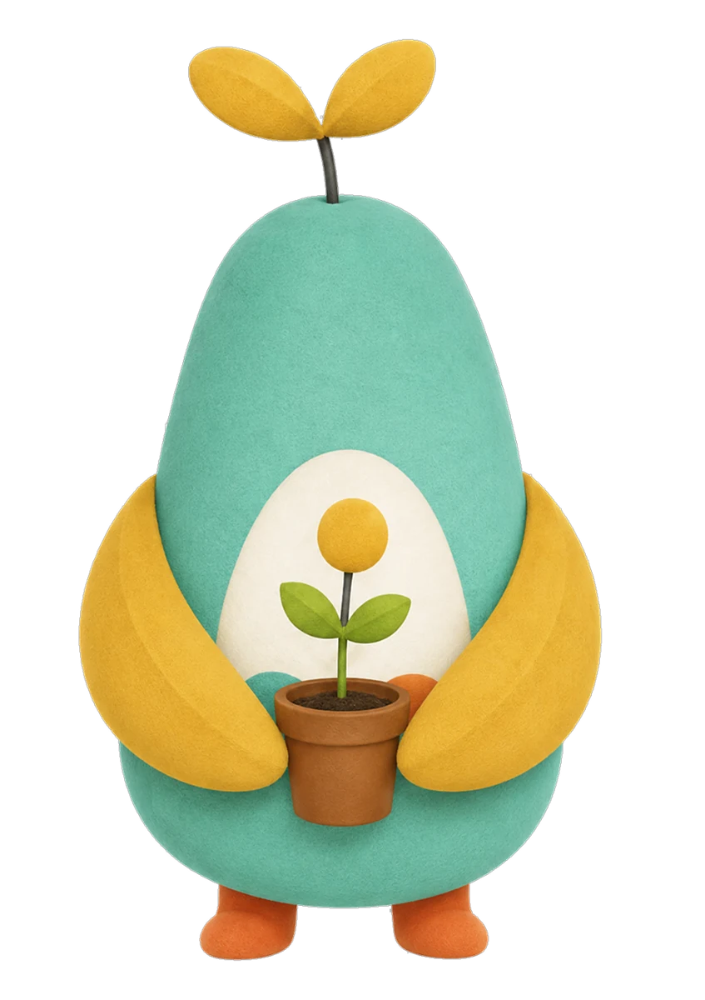
01Замечаем
каждого
Небольшие группы дают больше пространства для общения и внимания.
до 15детей в группе
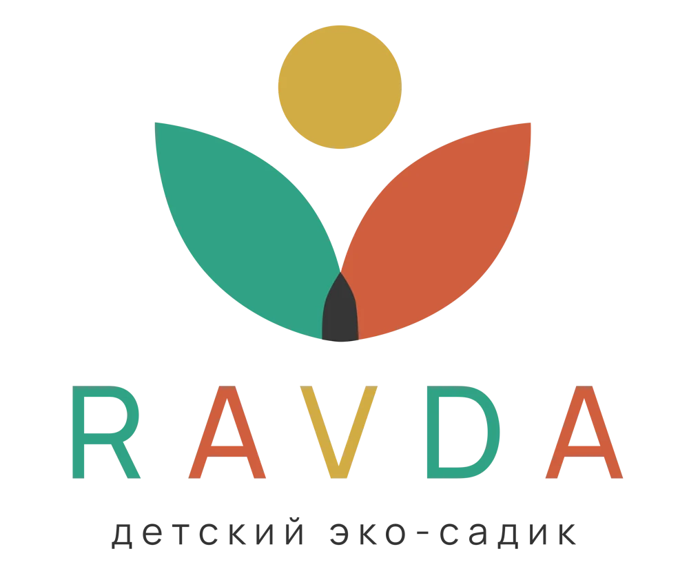
8 928 675 54 08БУЙНАКСК · ДЕТСКИЙ ЭКО-САДИК
Детский сад, где есть время заметить каждого.
Языки, творчество и подготовка к школе —
в тёплой атмосфере заботы и уважения.
Буйнакск · ул. Хизроева, 57А
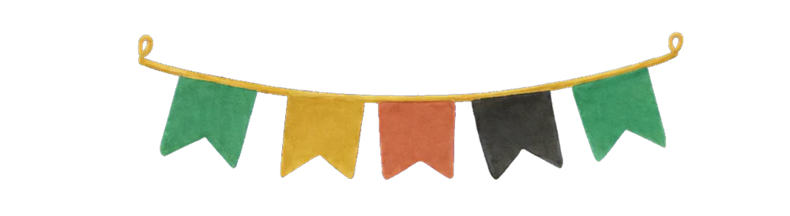
Привет! Я росток Равда.
Давай познакомимся с нашим садом?
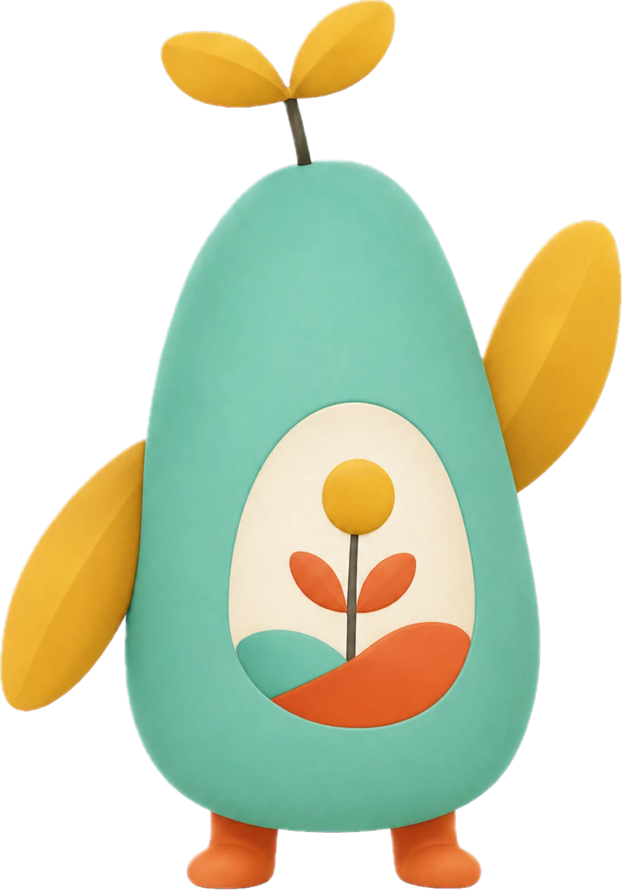
Нажмите на росток — он вам ответит
01 / С ЗАБОТОЙ О ГЛАВНОМ
Мы создали RAVDA, чтобы дети росли в доброте и уважении — к себе, своей семье и окружающему миру. Здесь можно пробовать, задавать вопросы и быть собой.

01Небольшие группы дают больше пространства для общения и внимания.
В младшей группе — до 10 детей. Первые шаги в новом месте обсуждаем вместе с родителями.
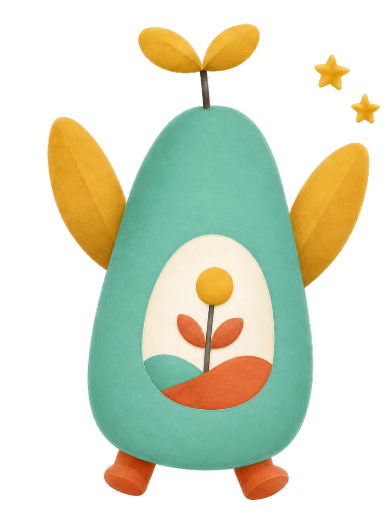
03Знакомимся с исламскими ценностями в понятной и бережной форме. Учимся уважению и заботе.
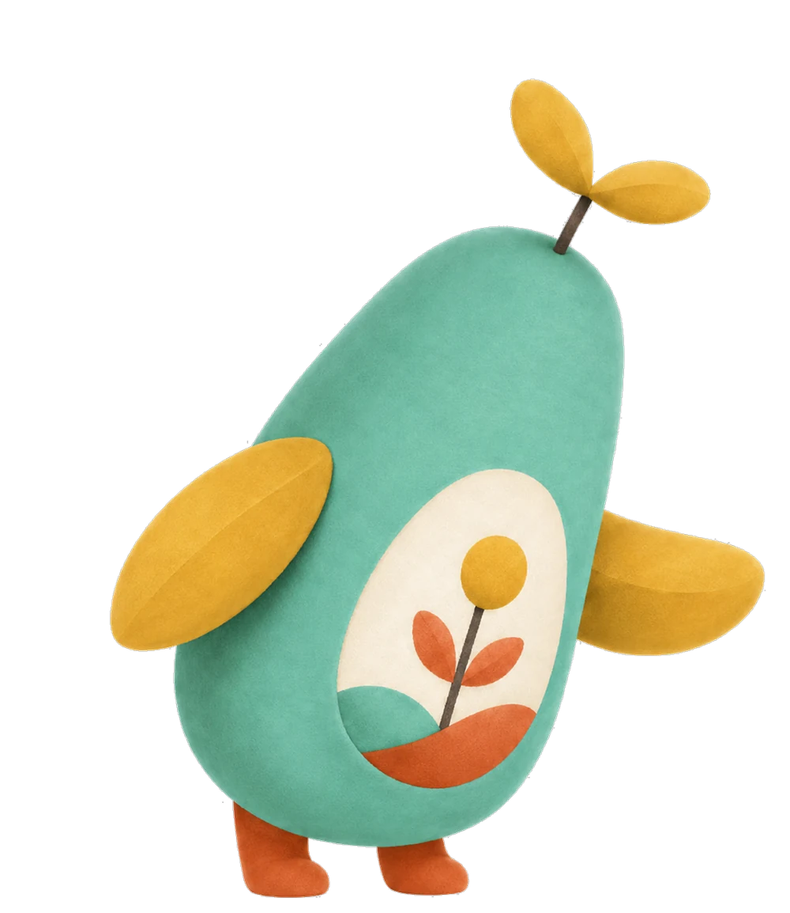
02 / МАЛЕНЬКИЕ ШАГИ, БОЛЬШИЕ ОТКРЫТИЯ
ЗНАКОМИМСЯ С ЯЗЫКАМИ
Английский и арабский становятся частью знакомства с миром. Развиваем любознательность и интерес к новым словам.
03 / НАСТОЯЩАЯ ЖИЗНЬ RAVDA
Зато можно сохранить его
самые тёплые моменты.
Посмотрите, как проходят наши дни.
ДЕТСТВО В ЦВЕТАХ RAVDA
Знакомимся с исламскими ценностями в понятной, бережной форме.
Наблюдаем, задаём вопросы и учимся заботиться о мире вокруг.
Пробуем, собираем и открываем новое вместе.
Внимание взрослого помогает почувствовать себя увереннее.
После открытий и игр важно восстановить силы.
Полезная, разнообразная еда и тёплая атмосфера за столом.
Даём любознательности и воображению пространство.
Иллюстрации из фирменной коллекции RAVDA
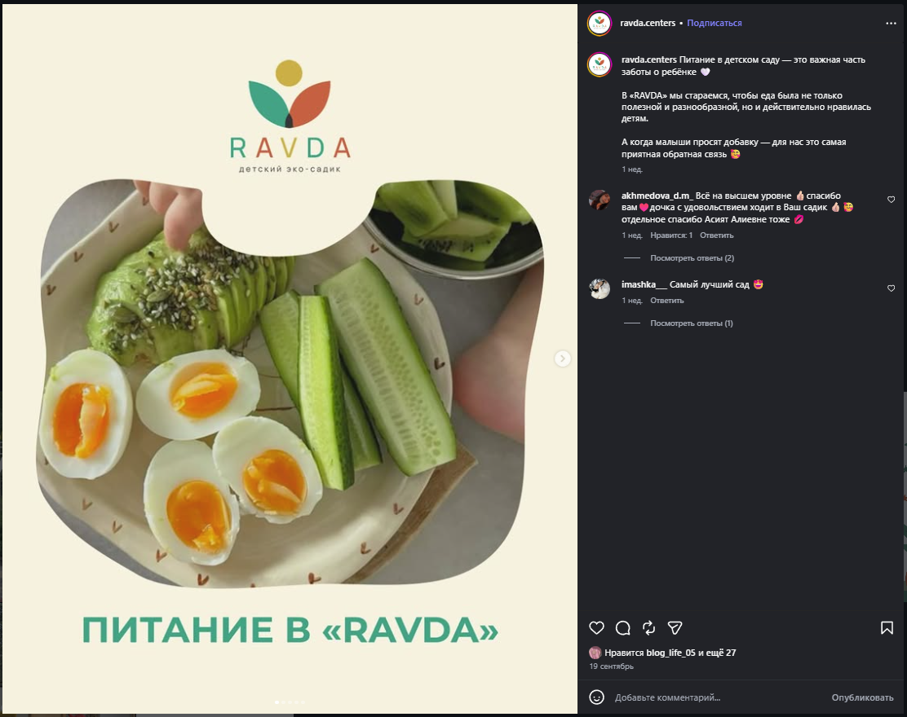
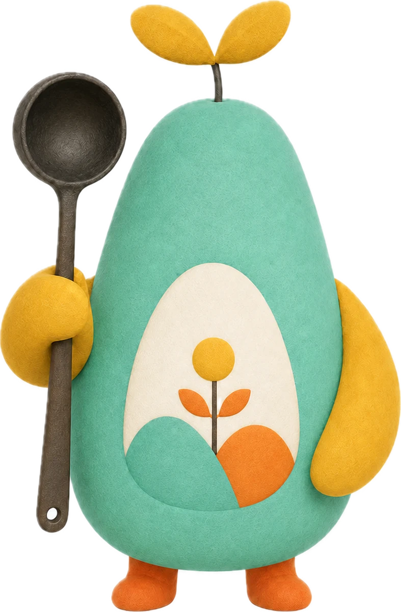
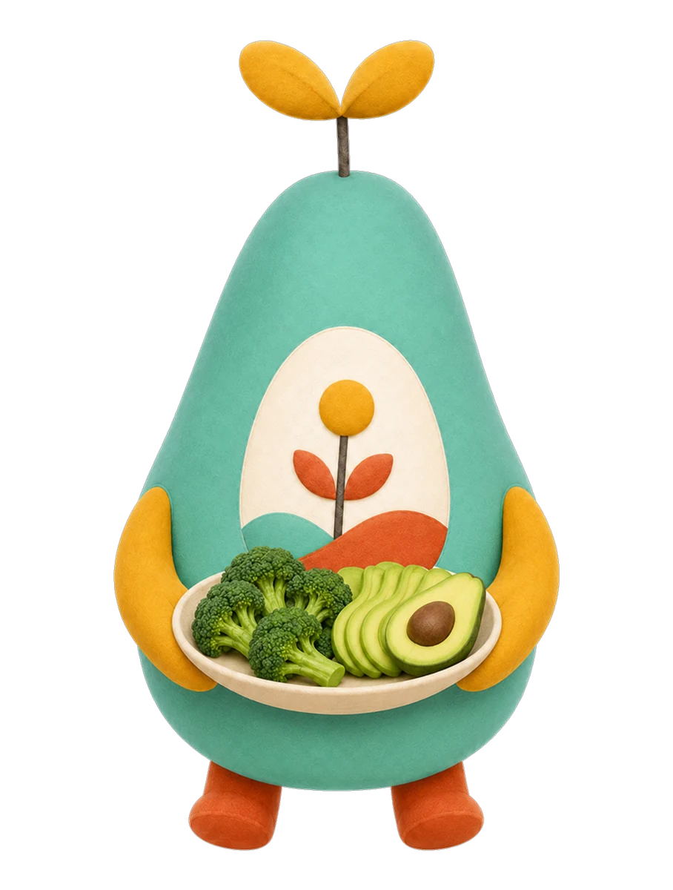
04 / ЗАБОТА В КАЖДОЙ ЛОЖКЕ
Питание — важная часть заботы о ребёнке. Мы стараемся, чтобы еда была разнообразной, полезной и действительно нравилась детям.
А когда малыши просят добавку — для нас это самая приятная обратная связь.
Узнать о меню у администратора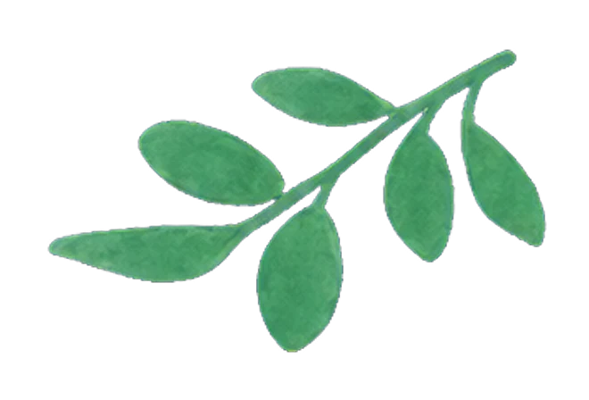
05 / ИСТОРИЯ, С КОТОРОЙ ВСЁ НАЧАЛОСЬ
…Меня зовут Равза. Когда-то я создала детский сад, в который вложила годы своей жизни, силы, любовь и душу. Я даже не представляла, что однажды мне придётся начать всё сначала…
Равза основательница RAVDA
Меня зовут Равза. Ранее я являлась основателем детского сада KIDS ACADEMY.
Я вложила в него годы своей жизни, силы, любовь и душу. Это был проект, который я создавала всем сердцем.
Но в какой-то момент моя жизнь изменилась, и детский сад KIDS ACADEMY перестал принадлежать мне.
Было непросто принять, что дело, которому я посвятила столько лет, больше мне не принадлежит. Но именно тогда я поняла, что не хочу отказываться от того, что люблю больше всего, — работать с детьми и создавать для них пространство, в котором они будут расти счастливыми.
Так родилась Равда.
Равда — это мой новый путь. Здесь снова есть всё, во что я верю, что считаю важным и правильным. Я начинаю заново, но уже с большим опытом, знаниями и пониманием того, каким должен быть современный детский сад.
Если вы захотите пройти этот путь вместе со мной, я буду искренне рада приветствовать вас в Равда.
06 / СЛОВА, КОТОРЫЕ НАС СОГРЕВАЮТ
Всё на высшем уровне 👍🏻 спасибо вам 💗 дочка с удовольствием ходит в ваш садик 🌷🥰 отдельное спасибо Асият Алиевне тоже 💋
Очень понравилось ее отношение к работе, серьезность, богобоязненность (что немаловажно!)
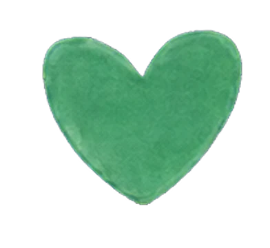
ВАШЕ ЗНАКОМСТВО С RAVDA
Расскажите администратору о ребёнке. Узнайте о группах, адаптации и договоритесь о знакомстве с садиком.
Узнать о свободных местахСтоимость, режим и подходящая группа — администратор расскажет об актуальных условиях для вашей семьи.
ЕЩЁ НЕМНОГО О ВАЖНОМ
В профиле сада указан возраст от 1,5 до 7 лет. Подходящую группу и возможность приёма по возрасту уточните у администратора — он поможет сориентироваться.
Не более 15 детей, в младшей группе — до 10. Наличие мест уточняйте перед записью.
Английский и арабский, подготовка к школе, творчество, развитие самостоятельности и знакомство с природой. Программу для возраста вашего ребёнка расскажет администратор.
Начните со знакомства с воспитателем. Расскажите о привычках и особенностях ребёнка, а подходящий порядок первых посещений обсудите вместе с командой сада.
Да, напишите администратору. Уточните актуальное меню, часы работы, режим дня и вопросы индивидуального питания до первого посещения.
ЗНАКОМСТВО БЕЗ ЛИШНИХ ХЛОПОТ
Посмотрите пространство, познакомьтесь с воспитателями и задайте вопросы, которые важны именно вашей семье.
Откроется готовый текст — его можно изменить перед отправкой.
Удобнее голосом? Позвоните намПРОСТО НАЧНИТЕ СО ЗНАКОМСТВА
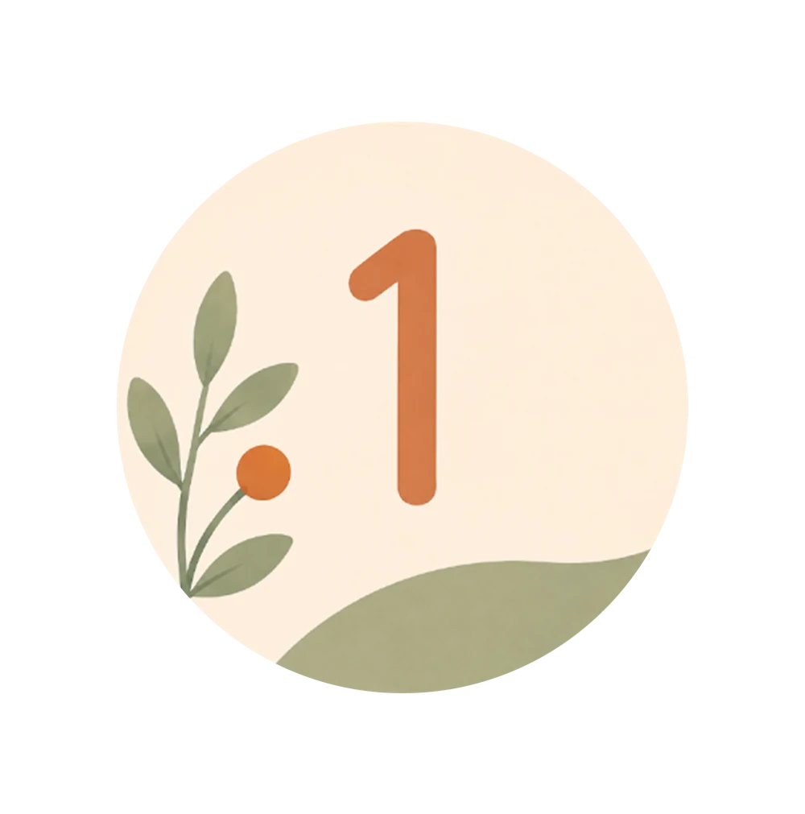
Расскажите о возрасте ребёнка и задайте вопросы администратору.
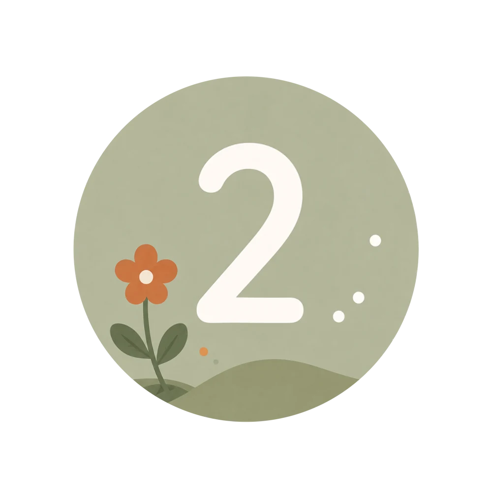
Договоритесь о встрече, познакомьтесь с садом и воспитателями.
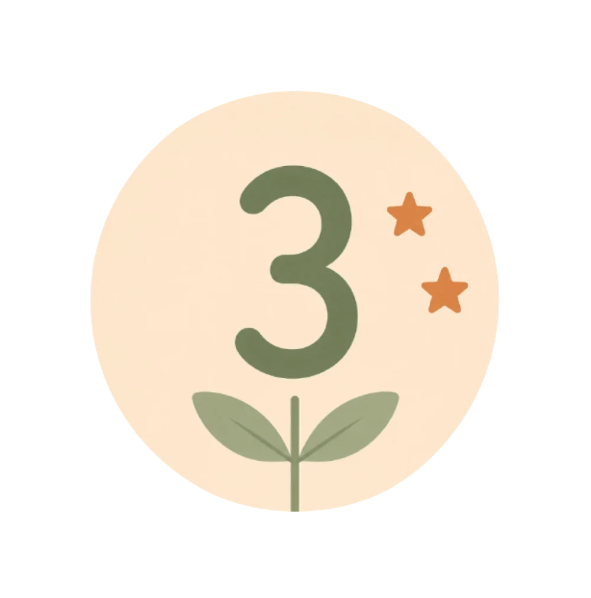
Вместе подберём группу и обсудим, как помочь ребёнку освоиться.
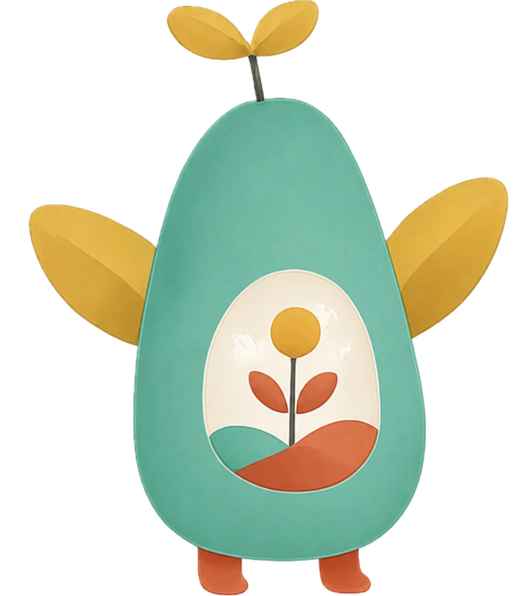
07 / ДАВАЙТЕ ЗНАКОМИТЬСЯ
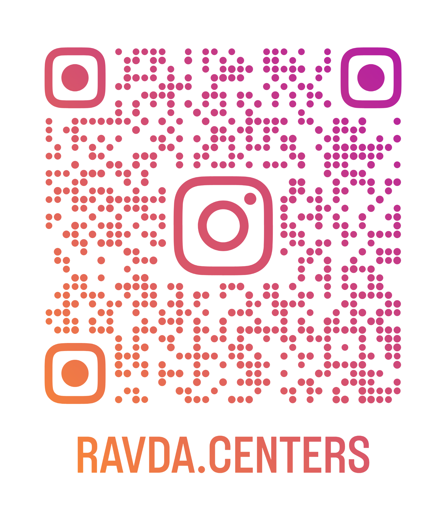
Ещё больше
наших маленьких историй.